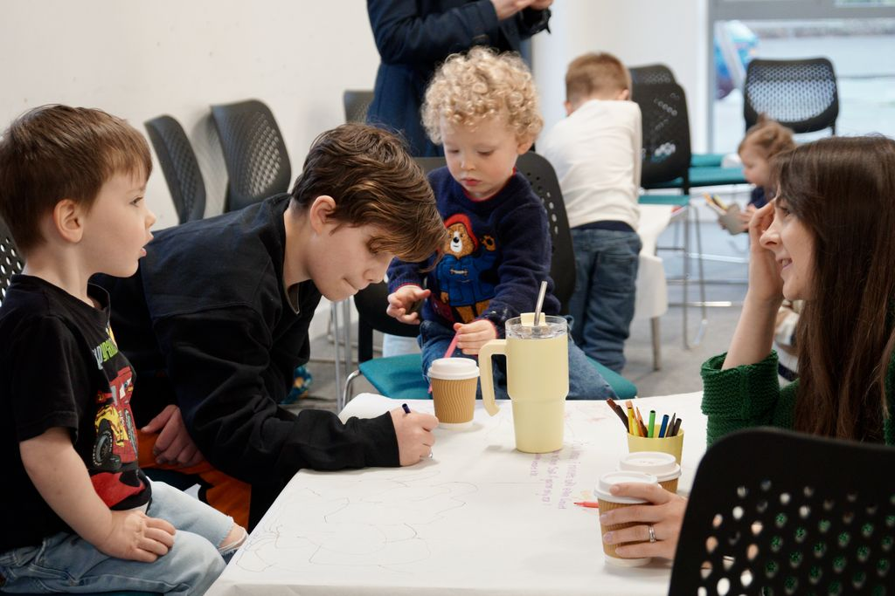
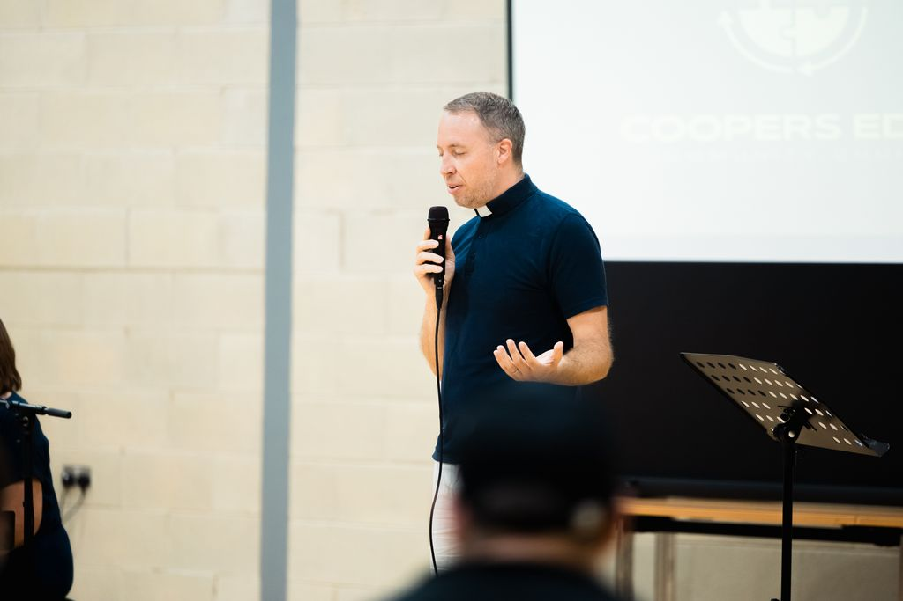
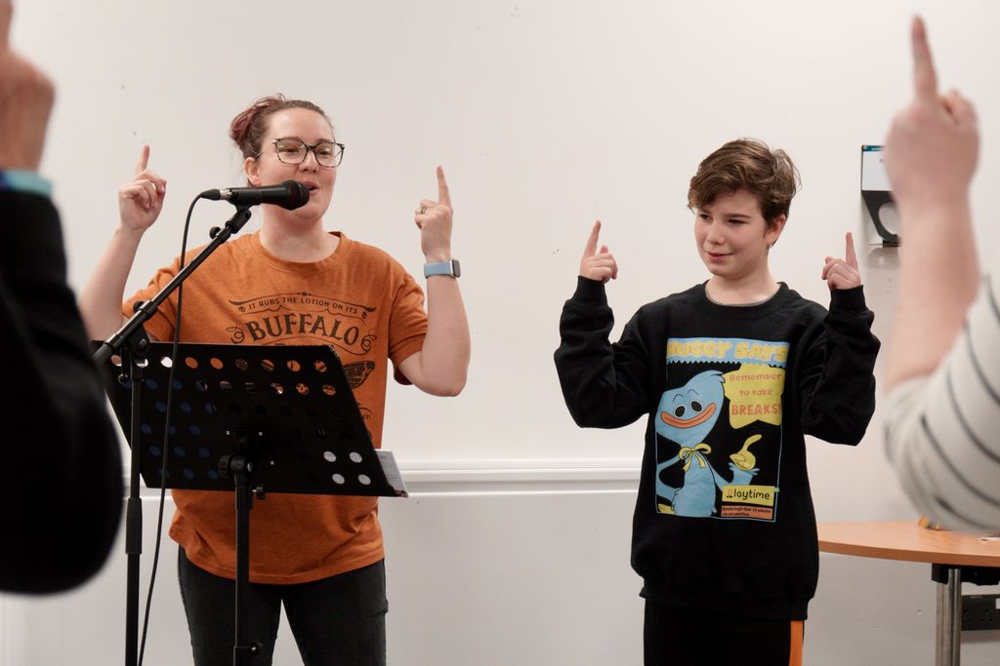

What's on
Regular gatherings, groups, and events for everyone throughout the week.
Regular gatherings
Sunday Gatherings
The heart of our community life is meeting together on Sundays. Every week at 4pm, we gather to worship, hear from the Bible, pray together, and enjoy each other's company. We believe that Sunday gatherings should feel like coming home.



Coopers Kids
We believe children are full members of our community, and Coopers Kids exists to give them a vibrant, age-appropriate space to encounter God for themselves. Run by a dedicated volunteer team, it's fun, creative, and rooted in the Bible.
We have two groups: one for younger children and one for older children, each with its own specially trained team.
The Ark Toddler Group
The Ark is a warm, welcoming space for families with toddlers to come together mid-week. It's a brilliant way to meet other parents and carers in Coopers Edge, whether or not you have any connection with church.
Each session includes:
- Free play and activities for toddlers
- Snacks for children and adults
- A short Bible story and songs
- Good conversation and new friendships
Prayer Meetings
Prayer is at the heart of everything we do. We have two regular prayer gatherings each month, both relaxed and open to everyone — whether prayer is something you're new to or something you've been practising for years.
The 1st Wednesday of each month, 8–9pm, we gather online via Zoom to pray together for our community, our church, and the wider world. To get the access code, just drop us an email.
Easter 2026
A week of special events for the whole community — everyone welcome.
Palm Sunday Celebration
Decorate your scooter or bike as a donkey, make a palm leaf, hear the story, and join the parade. A fun, family-friendly celebration for all ages.
Easter Egg Hunt
A community-wide Easter egg hunt across Coopers Edge, starting at the Community Centre. £1 entry (cash only). Chocolate prizes to be won!
Good Friday Interactive Experience
Five interactive stations, challenges, clues to collect, and codes to crack. A creative, hands-on Good Friday experience for the whole family.
Easter Sunday Celebration
Celebrate Easter with us! Cooked breakfast rolls, a short joyful service, and baptisms. He is risen — come and celebrate.
Come and see us
No need to book, no need to dress up. Just come. We meet every Sunday at 4pm at @TheEdge Community Centre.